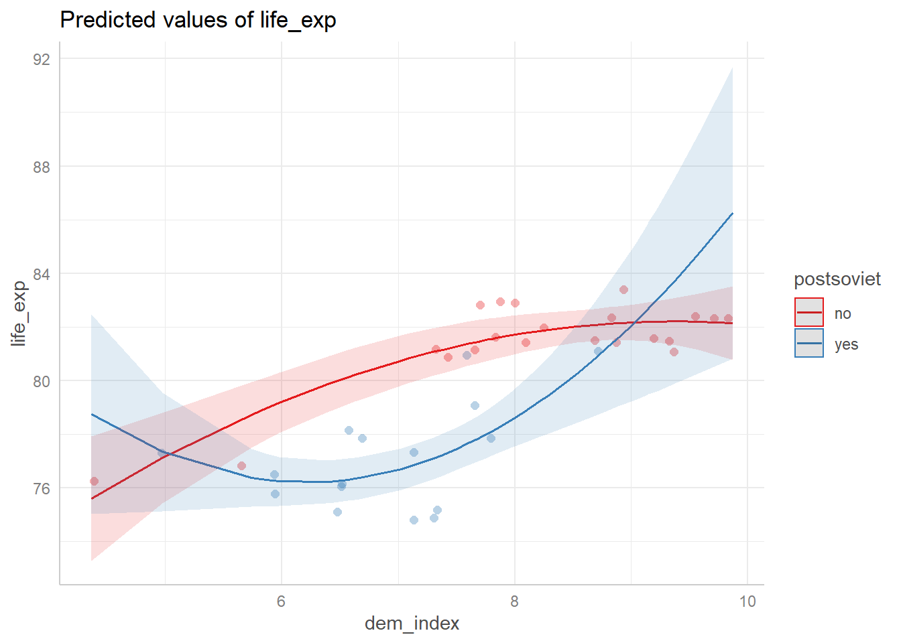
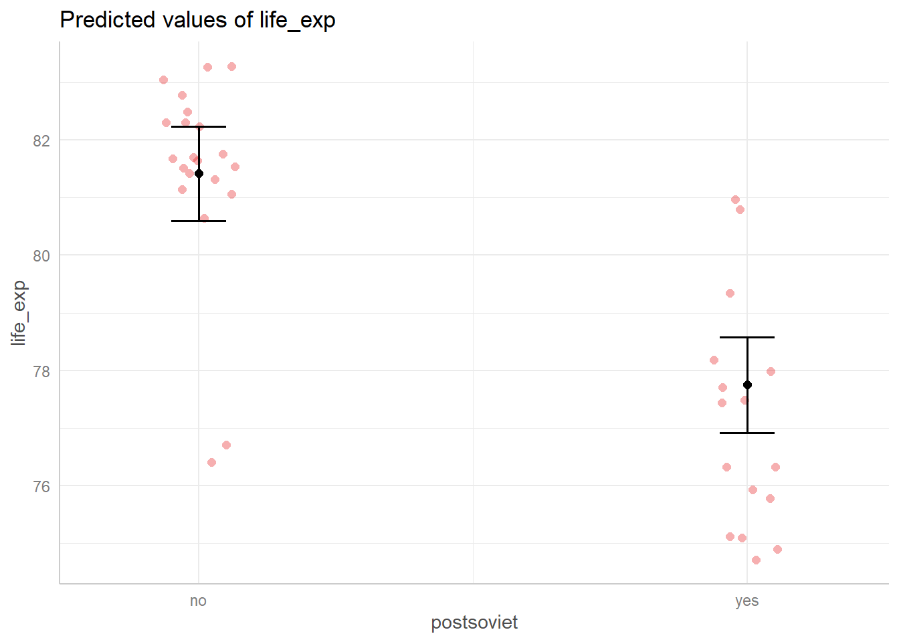
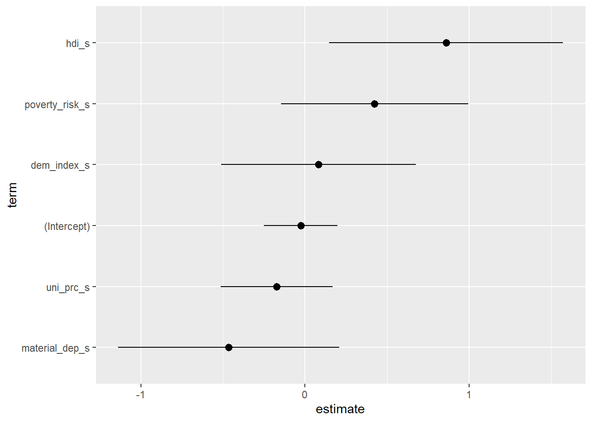

In this part, we will focus on visual interpretation of regression models, using packages ggeffects and broom.
One of the major steps in statistical modelling is the interpertation of an estimated model. For some models, this is a fairly easy task. Consider for example the following model:
mod1 <- lm(life_exp ~ dem_index, data = countries)
coef(mod1)## (Intercept) dem_index
## 67.191591 1.621479Our model suggests that the life expectancy in countries with a the democratic index of zero is 67.2 years. Countries with one more point on the democratic index have on average 1.6 years higher life expectancy. So far so easy.
Now consider a more complicated more complicated model, involing a quadratic term and an interaction:
## (Intercept) poly(dem_index, 2)1
## 80.981531 8.327868
## poly(dem_index, 2)2 postsovietyes
## -3.296518 -1.995878
## poly(dem_index, 2)1:postsovietyes poly(dem_index, 2)2:postsovietyes
## 5.085355 12.699062This model is much harder to interpret. Technicaly speaking, countries whose quadratic democratic index is higher by 1, while their base democratic index is zero and if they are post soviet, have on average 12.7 years higher life expectancy. While technicaly correct, this information is also completely undecipherable.
Generally speaking, once our models contains transformed variables or interactions, interpreting regression coefficients becomes very hard, if not impossible. Fortunately, we have another way and that is to interpret our models visualy. This can be done through the so called marginal effects plots. Marginal effect is an expected value of the dependent variable for given values of selected independent variable while other independent variables are held constant (preferably at some reasonable value such as mean).
In R, there several packages for computing marginal effects, with ggeffects being especialy suited for the tidyverse environment. We can visualize our model using the following code:
plot(ggpredict(mod2, terms = c("dem_index", "postsoviet")), add.data = TRUE)
Now we can clearly see what our model is telling us. Our model has only two independent variables, so it is possible to plot them both onto a single graph. Alternatively, we could plot only a specific independent variable against the dependent one:
plot(ggpredict(mod2, terms = "postsoviet"), add.data = TRUE)
The graph above shows the the expected life expectancy for postsoviet and western countries with average democratic index. It is important to recognize that the plot doesn’t merely show the average life expectancy of postsoviet and western countries, but average life expectancy of said types of countries conditional on democratic index.
ggpredict() itself returns the marginal effects returns a data frame in the tidy format, which can be used for plotting:
ggpredict(mod2, terms = "postsoviet") %>%
ggplot(aes(x = x, y = predicted, ymin = conf.low, ymax = conf.high)) +
geom_pointrange() +
theme_light()The ggeffects package offers three options for computing marginal effects. The first one we have already seen, that is ggpredict(). This functions is based on the predict() function from the base R and will work out of the box. The second options is ggeffect(), which requires the effects package. The main difference between it and the previous option is how categorical predictors are treated. ggpredict() fixes categorical at the reference category when computing marginal effects, while ggeffect() computes a “sort of average of the categorical predictors” (as it is stated in the manual). The last option, ggemmeans(), treats categorical predictors in the same vein as ggeffect() and is mostly used for various contrasts encoding (i.e. various encoding of differences between categories). It also require the emmeans package.
Even when regression coefficients are easily interpretable, it may be beneficial to plot them on a graph. This is especially useful when the number of predictors is high and the difference between them may not be immediately apparent from a table. For example, consider a following model:
mod3 <- lm(life_exp ~ dem_index + hdi + uni_prc + poverty_risk + material_dep, data = countries)
coef(mod3)## (Intercept) dem_index hdi uni_prc poverty_risk material_dep
## 38.9120025 0.1797816 45.0303693 -6.2845411 14.9125690 -10.4917121This is still a relatively very small model, but we can use it to demonstrate how pointrange plots can be useful. Pointrange plots visualize regression estimates as points along with confidence intervals. For pointrange plot work the best, it’s useful to standardize variables beforehand:
countries <- mutate(.data = countries,
across(.cols = c("life_exp", "dem_index", "hdi", "uni_prc", "poverty_risk", "material_dep"),
.fns = scale,
.names = "{.col}_s"))
mod3 <- lm(life_exp_s ~ dem_index_s + hdi_s + uni_prc_s + poverty_risk_s + material_dep_s, data = countries)First step in creating a pointrange plot is to extract regression coefficients and their standard errors in a tidy format. This can be done using broom package. This package allows us to easily extract various information about our model. To extract regression coefficients as a data frame, we can use the tidy function:
tidy(mod3)## # A tibble: 6 x 5
## term estimate std.error statistic p.value
## <chr> <dbl> <dbl> <dbl> <dbl>
## 1 (Intercept) -0.0263 0.114 -0.231 0.819
## 2 dem_index_s 0.0829 0.303 0.274 0.786
## 3 hdi_s 0.859 0.364 2.36 0.0257
## 4 uni_prc_s -0.172 0.174 -0.990 0.331
## 5 poverty_risk_s 0.424 0.291 1.46 0.157
## 6 material_dep_s -0.465 0.343 -1.36 0.186With this data frame, plotting the regression coefficients is straightforward:
tidy(mod3) %>%
ggplot(aes(x = estimate, xmin = estimate - 1.96*std.error, xmax = estimate + 1.96*std.error, y = term)) +
geom_pointrange()The plot above shows the regression coefficients for each predictor, we can also improve the graph by ordering the predictors by effect size:
tidy(mod3) %>%
mutate(term = fct_reorder(term, estimate)) %>%
ggplot(aes(x = estimate, xmin = estimate - 1.96*std.error, xmax = estimate + 1.96*std.error, y = term)) +
geom_pointrange()
From the graph above, we can easily see the biggest differences in life expectancy are based on human development index (which is positively associated with life expectancy) and on material deprivacy (which is negatively asssociated with life expectancy). Furthermore, we can see that regression coefficient for percentage of people with university education (uni_prc_s) is estimated much more precisely than the coefficients for human development index or material deprivation.